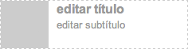
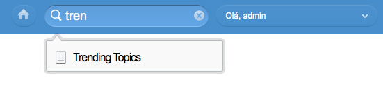

- v1.0.0 (02-06-2011)
Componentes-Fixos¶
A aplicação de publicação de componentes fixos permite a edição de componentes que tenham ciclo de vida diferente da página (includes).
Ela permite publicação/despublicação de componentes-fixos, bem como configuração independente de cada componente fixo através de templates, css e js.
Note
Esta aplicação não posiciona o componente fixo na página do produto. É necessária a inclusão do mesmo através de um include SSI do estático gerado.
Instalação¶
Para utilizar esta funcionalidade do libby, inclua a seguinte app como INSTALLED_APPS:
INSTALLED_APPS = [
#...
'libby.aplicacoes.componentes_fixos',
#...
]
migration
Não se esqueça de rodar as migrations após instalar a app. Estas migrations criam as tabelas dos novos models bem como os direitos de acesso no ADMIN CMA.
Warning
A aplicação de Componentes Fixos não vem com nenhum componente fixo. Cada componente fixo possui uma app a parte e deve ser instalado como tal.
Funcionamento¶
A aplicação de publicação de componentes-fixos disponibiliza um novo item no dashboard do usuário chamado ‘Gerenciamento de Componentes Fixos’, que leva a uma lista dos componentes fixos que podem ser editados no produto.
O registro de um componente fixo é automático, bastando para isso que o componente seja encapsulado em uma app contendo um arquivo chamado fixed_conf.py, similar ao abaixo:
#!/usr/bin/python
# -*- coding: utf-8 -*-
# chave que identifica unicamente o componente
KEY = "trending"
# label amigável deste componente
LABEL = "Trending Topics"
# template do componente no CMA
CMA_TEMPLATE = "libby/trending_topics/cma.html"
# template do componente no CDA
CDA_TEMPLATE = "libby/trending_topics/cda.html"
Este arquivo permite à aplicação de componentes-fixos fazer a gestão do ciclo de vida do mesmo (publicado, despublicado, etc.).
Anatomia de App de Componente Fixo¶
Cada novo componente fixo é disponibilizado como uma app a ser instalada no produto que desejar utilizá-lo. Além disso, muito poucas modificações são necessárias a uma app django normal.
A primeira é que seja criado um arquivo fixed_conf.py como este.
A segunda particularidade é que a app precisa ter um template para o CMA e outro para o CDA.
fixed_conf.py¶
Este arquivo de configuração possui algumas informações úteis para a publicação de componentes fixos: chave, label e templates.
A chave do componente fixo é identificada pelo atributo KEY do arquivo de configuração. Esta é a chave que identifica este componente em toda a infra-estrutura da aplicação de componentes fixos.
O título do componente é dado pelo atributo LABEL. Este valor é usado para a interface com o usuário.
Os templates que serão usados para este componente são dados pelas chaves CMA_TEMPLATE e CDA_TEMPLATE, para CMA e CDA, respectivamente.
App Django Normal¶
Tirando as particularidades acima, a app de um componente-fixo em particular nada mais é que uma app django normal.
Caso sejam necessárias views especiais, novos models ou URLs diferentes, estão todas disponíveis no modelo tradicional do django.
Além disso, tanto templates ou medias podem ser incluídas de forma natural.
Modelo de Dados¶
A aplicação de componentes fixos inclui dois novos models: ComponenteFixo e DadosComponente.
Estes são responsáveis por controlar o ciclo de vida de cada componente fixo.
Template de CMA¶
A aplicação de componentes fixos utiliza algumas classes específicas para integração com foto e texto. Estas classes automatizam a tarefa (somente no CMA) de edição.
Um exemplo de template de CMA é o abaixo:
<div class="glb-grid-3 destaque">
<div class="foto required">
</div>
<div class="chamada titulo required" placeholder="editar título">
</div>
<div class="chamada subtitulo" placeholder="editar subtítulo">
</div>
</div>
No cma de edição de componentes fixos, este template seria renderizado assim:
Alguns detalhes sobre esta renderização:
- A classe ‘required’ pode ser aplicada em fotos e chamadas e faz com que a aplicação de componentes fixos valide automaticamente estes campos ao publicar;
- O texto ‘editar título’ e ‘editar subtítulo’ da imagem correspondem ao atributo placeholder do template;
- A classe ‘destaque’ é a classe que identifica o conteúdo como um destaque (visualmente é a parte com linha pontilhada). Além disso cada destaque possui uma url;
- A classe ‘foto’ é a classe que sinaliza para a aplicação de edição que aqui deve ter uma foto (integração com o pop-in de foto);
- A classe ‘chamada’ é responsável pela inclusão de caixas edit-in-place para campos de texto.
Template de CDA¶
O CDA é um template que recebe a seguinte estrutura na variável data:
data = [
{
fotos: [{
src: 'image/path.jpg',
alt: 'créditos da foto'
}],
inputs: [
'titulo',
'subtitulo'
],
url: 'http://www.globo.com'
},
]
Esta estrutura depende da estrutura do template de CMA. A estrutura acima corresponde ao template de CMA mostrado na parte Template de CMA.
Para renderizar no CMA, basta iterar pelos destaques em data e utilizar as fotos em fotos e as chamadas em inputs.
Um exemplo de renderização dos dados acima:
<div class="glb-bloco componente-fixo trending">
<div class="glb-grid-12 destaque">
<a href="{{ data.0.url }}">
<img src="{{ data.0.fotos.0.src }}" alt="{{ data.0.fotos.0.alt }}" />
<strong class="chamada titulo">{{ data.0.inputs.0 }}</strong>
<span class="chamada subtitulo">{{ data.0.inputs.1 }}</span>
</a>
</div>
</div>
Com os dados acima, o resultado seria:
<div class="glb-bloco componente-fixo trending">
<div class="glb-grid-12 destaque">
<a href="http://www.globo.com">
<img src="image/path.jpg" alt="créditos da foto" />
<strong class="chamada titulo">título</strong>
<span class="chamada subtitulo">subtítulo</span>
</a>
</div>
</div>
Spotlight Providers¶
Para inserir o recurso o Spotlight Providers, basta inserir no settings da aplicação o seguinte código:
SPOTLIGHT_PROVIDERS = (
('libby.aplicacoes.componentes_fixos', 'ComponentesProvider'),
)
Com isso, pode-se utilizar o Spotlight Providers, tal como na imagem abaixo:
